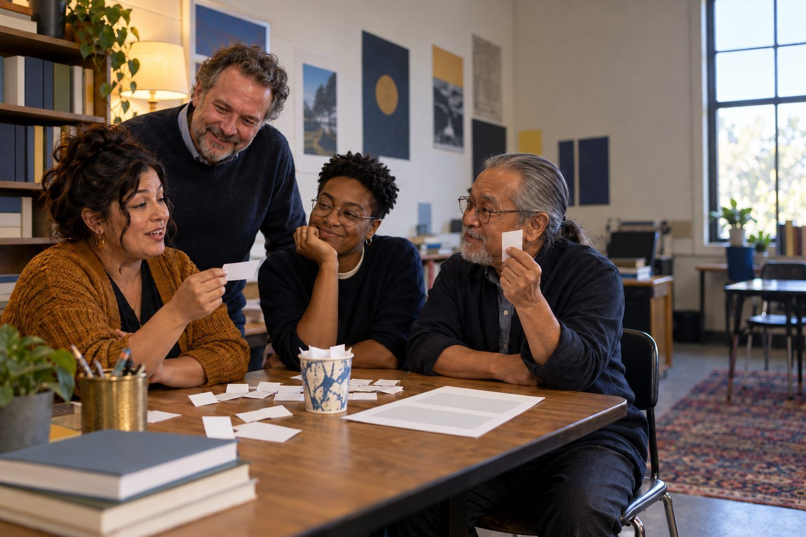

Professional learning · Teachers, Librarians, Coaches, Faculty · 50 minutes
The Human Language Model
Educators become a tiny language model with paper slips and a cup, and discover firsthand why fluent AI text can be confidently wrong.
Generative AI chatbots don't look facts up the way a search engine or a database does. They generate text by repeatedly predicting a likely next piece of text based on patterns learned from enormous amounts of training data. In this unplugged session, teams "train" a ten-sentence language model by hand, generate new sentences by drawing slips from a cup, and then ask their model a factual question. The fluent, plausible, wrong answers that come out are the most memorable explanation of hallucination most educators will ever get, and one they can run with students the next day.
In this packet
- Handout A: The Tiny Training Library (reading)
- Handout B: Next-Word Tally Sheet (organizer)
- Handout C: Model Run Cards (cut-apart cards)
- Facilitator key (last page)
TCEA ELE indicators
- AI1.1 I know how AI systems work and their capabilities in educational contexts.
- AI1.2 I can explain AI concepts in simple terms to various stakeholders.
- AI1.3 I am aware of the current limitations and potential biases in AI systems.
- AI4.1 I know how to promote critical thinking skills in relation to AI-generated information.
Full facilitator guide: mglearn.github.io/eles/activities/human-language-model.html
Handout A for The Human Language Model
The Tiny Training Library
This is ALL your model will ever read. Treat capitals as lowercase. Treat each period as the word END.
11. The teacher opened the book.
22. The student opened the door.
33. The teacher read the book to the class.
44. The class read the story.
55. The student read the story to the teacher.
66. The principal opened the meeting.
77. The class won the award.
88. The student won the spelling bee in May.
99. The teacher won the award in May.
1010. The book won the award in June.
Handout B for The Human Language Model
Next-Word Tally Sheet
For each word, make a tally for every word that came right after it in the library. Then write one slip per tally mark and file it under that word.
| Word | Words that came next (tally each one) | Total slips | Most likely next word |
|---|---|---|---|
| the | |||
| teacher | |||
| student | |||
| class | |||
| book | |||
| opened / read / won | |||
| story | |||
| award | |||
| spelling → bee → in | |||
| in | |||
| principal / door / meeting / may / june / to |
Handout C for The Human Language Model
Model Run Cards
Cut apart and stack face down. Draw in order. Backs are the facilitator key; print them on a separate sheet.
Sheet 1 of 2
Card 1 · Generate
Start with "The." Load the cup with every slip filed under "the." Draw one. Then load the slips for that word and draw again. Stop at END. Make four sentences.
Card 2 · Notice
Circle any generated sentence that does NOT appear in the library. Is it grammatical? Is it true? Is it sensible?
Card 3 · Same prompt, twice
Start from "The student" twice. Do you get the same sentence both times? Why or why not?
Card 4 · Fact question
Ask your model: "Who won the spelling bee in June?" Generate from "The" until you get a sentence that mentions the spelling bee.
Card 5 · Fact question
Ask your model: "What did the principal win?" Generate from "The principal."
Card 6 · Fact question
Ask your model: "Who read the book?" Generate from "The." Compare three runs.
Card 7 · Real models differ
Our model predicts from ONE previous word. How would the output change if it looked at the whole sentence so far?
Card 8 · Real models differ
Our model stores literal slips. What would change if it trained on a huge share of the public internet and books?
Handout C for The Human Language Model
Model Run Cards
Cut apart and stack face down. Draw in order. Backs are the facilitator key; print them on a separate sheet.
Sheet 2 of 2
Card 9 · Real models differ
Some AI tools search the web or read an uploaded document before answering. Does that solve hallucination?
Card 10 · Explain it
Write a one-minute explanation of AI hallucination for your students, a parent, or colleagues. Include: prediction from patterns, why it can be false, and one thing to do about it.
Card 11 · Mock chatbot answer (fictional)
MOCK OUTPUT, FICTIONAL TOWN: "The Maple Hollow Spelling Bee was founded in 1962 by librarian Ruth Calloway, and the 1988 champion, Daniel Ortiz, went on to win the state title."
Facilitator only for The Human Language Model
Answer key and notes
Handout C: Model Run Cards
- Card 1 · Generate
- Key tallies: after "the": teacher 4, book 3, student 3, class 3, award 3, story 2, door 1, principal 1, meeting 1, spelling 1 (22 slips). After "opened," "read," and "won": always "the." After "in": May 2, June 1.
- Card 2 · Notice
- Most generated sentences are new combinations: grammatical, often sensible-sounding, sometimes absurd ("The door won the award in June"). New text from old patterns is what "generative" means.
- Card 3 · Same prompt, twice
- Usually not. Each draw is random, weighted by frequency. Real chatbots also sample, which is why the same prompt can produce different answers on different tries.
- Card 4 · Fact question
- The library says a student won in MAY. Nobody won in June. Yet the model can easily produce "The teacher won the spelling bee in June." Fluent, specific, false: a hallucination.
- Card 5 · Fact question
- The only pattern after "principal" is "opened," so the model says "The principal opened the…" It cannot say "I don't know" because nothing in its design checks for knowing. Real chatbots are tuned to sometimes admit uncertainty, but that tuning is imperfect.
- Card 6 · Fact question
- The library says the teacher read the book, but runs may produce "The class read the book" or "The student read the book to the teacher," neither of which the library says. The more often a pattern appears in training, the more likely the right answer. Rare facts are fragile.
- Card 7 · Real models differ
- Far more coherent. Real large language models weigh long stretches of context (many pages of text), which is why their writing flows. Better context reduces nonsense but does not add a truth check.
- Card 8 · Real models differ
- Real models learn billions of numerical weights in a neural network instead of keeping tally piles, and they work with tokens (often word pieces). They can generalize in powerful ways. Their patterns also carry the gaps and biases of their training text.
- Card 9 · Real models differ
- It helps, because the prompt now contains relevant text to draw on. It doesn't guarantee accuracy: the tool can misread a source, blend sources, or cite a page that doesn't say what it claims. Verification is still the user's job.
- Card 10 · Explain it
- Strong example: "AI chatbots write by predicting what words usually come next, based on patterns in lots of text. That makes answers sound right even when there's no fact behind them. So we treat AI answers as a first draft and check the important parts with a trusted source."
- Card 11 · Mock chatbot answer (fictional)
- Maple Hollow is fictional, so every name and date here is invented, but notice how real it sounds. Specific names, dates, and titles are exactly what a model produces when it has a pattern ("founded in [year] by [person]") but no fact.